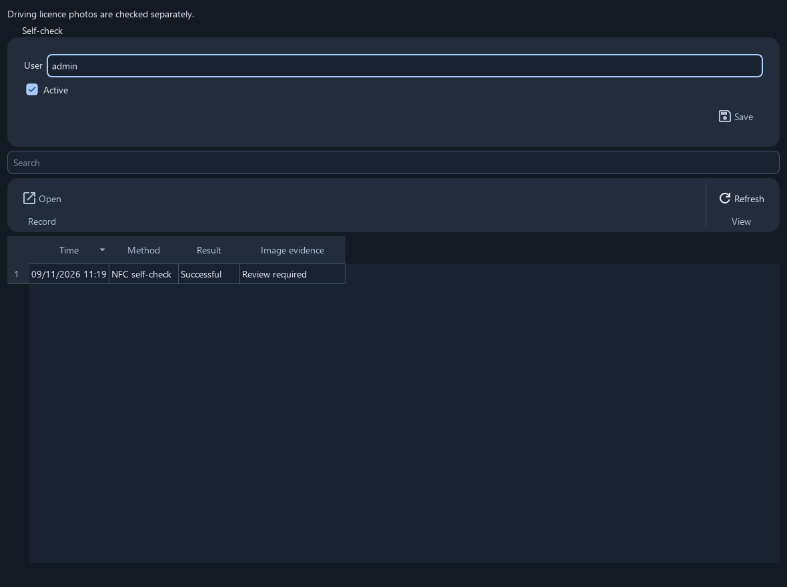
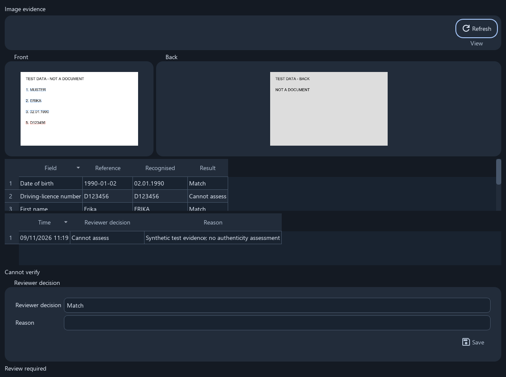

Mobile driving-licence checks¶
The authenticated /api/mobile/v1/fsk interface connects the DTCO Android app to Fleet Mira's existing driving-licence checks. Pro uses SQLite and the running desktop application's worker. Enterprise uses FleetMiraApi, tenant-bound PostgreSQL and FleetMiraWorker. Basic does not host this service. A successful check updates the same deadlines as the existing desktop workflow.
Configuration and permissions¶
Android requires Android 10 or later and compatible phone NFC hardware for checks; optional photos require an available camera app. Read-only evaluations do not require NFC or a camera. Windows Setup must update API, worker and versioned database schema together. Local OCR and all four language files are bundled; the service does not download external OCR models. The service account needs the existing protected data/document-root permissions. Plan free storage according to check volume and retention: an accepted image pair can contain up to 20 MiB of originals plus temporary working and backup copies.
- Configure HTTPS and a certificate trusted by Android as described in API service. No additional network exposure is required. Pro requires a running application with the mobile HTTPS listener configured; closing it makes the API unavailable.
- Maintain personnel, check requirements, intervals and active RFID assignments on the desktop. The personnel detail contains the additional Mobile driving-licence checks tab.
- Explicitly link one user to one person and enable self checks. Configuration requires
users.manageandfleet.manage; the linked user needsfsk.self. Matching email addresses do not establish a link. - Allow the required scopes in OAuth client
dtco-android. Existing Enterprise client configurations are not automatically expanded. Open mobile licence checks from Android settings, select the Fleet Mira target and use Sign in in the browser. The server intersects requested scopes with current user permissions. Existing tokens do not gain new rights.
| Scope | User permission and purpose |
|---|---|
fsk.self.read |
fsk.self: own status and history only |
fsk.self.check |
fsk.self: enabled own NFC check and own image upload |
fsk.read |
fsk.read: tenant-bound evaluation and check history |
fsk.check |
fsk.check: inspector check of a known person |
fsk.evidence.read |
fsk.evidence.read and fsk.read: protected images and analysis |
fsk.evidence.review |
additionally fsk.check, fsk.read and fsk.evidence.read: reasoned review |
The app uses browser PKCE, a one-use authorization code and automatically refreshed tokens. Revocation, permission withdrawal or removal of the self-check binding prevents further access. Only trusted server composition selects tenant databases and roots. Platform administration alone does not grant tenant business permissions.
The explicitly assignable FSK_SELF role (Self-check) grants only fsk.self; a personal enabled binding is still required. FSK_REVIEWER (Driving-licence checks) grants FSK read, check and evidence-review permissions plus fleet.read, without user, master-data or archive administration. Enterprise can add these roles to the relevant tenant membership. Pro assigns roles in user administration. Existing ordinary roles and memberships do not automatically gain the new rights.
Workflow¶
sequenceDiagram
participant A as DTCO Android
participant API as Fleet Mira API
participant DB as Tenant database / SQLite
participant W as Shared WorkerRuntime
A->>API: Browser PKCE / token
A->>API: NFC challenge for own or authorized person
API->>DB: Check current rights, binding and RFID
API-->>A: One-use challenge, 120 seconds
A->>API: Scanned UID + Idempotency-Key
API->>DB: Atomically record check and next deadline
API-->>A: Successful NFC check
opt Supplementary photos
A->>API: Camera front and back
API->>DB: Queue complete image pair
W->>DB: Claim work
W->>W: Archive originals, local OCR / comparison
W->>DB: Versioned analysis requiring review
A->>API: Read protected images and analysis
A->>API: Authorized reasoned reviewer decision
endSelf checks use the auditable MOBILE_NFC_SELF method; inspector checks use MOBILE_NFC_INSPECTOR. An NFC UID alone is not cryptographic proof of the original document or the holder's identity. Image analysis supplements an already effective NFC check. OCR failures or image discrepancies do not reverse that check or its next deadline.
API contract¶
Method and path relative to /api/mobile/v1/fsk |
Purpose |
|---|---|
GET /self |
Own status, next deadline, profile region and language |
GET /self/checks |
Own paged history |
POST /self/challenges |
One-use self-check challenge |
POST /self/checks |
Confirm NFC check |
GET /evaluation |
Evaluation filtered by search, status, dates, requirement and RFID |
GET /persons/{personId}/checks |
Authorized person history |
POST /persons/{personId}/challenges |
Inspector challenge |
POST /persons/{personId}/checks |
Confirm inspector check |
For image paths, {context} is either self or persons/{personId}:
| Method and path | Purpose |
|---|---|
POST /{context}/checks/{checkId}/evidence |
Create image pair, empty JSON, Idempotency-Key |
PUT /{context}/evidence/{id}/front and /back |
Binary JPEG/PNG with X-Content-SHA256 |
POST /{context}/evidence/{id}/complete |
Submit complete pair, empty JSON |
GET /{context}/evidence/{id} |
Processing status, analysis and review history |
GET /{context}/evidence/{id}/front and /back |
Protected originals |
POST /persons/{personId}/evidence/{id}/reviews |
analysisId, decision, reason and Idempotency-Key |
Confirm with {"challengeId":"<id>","uid":"<scanned UID>"} and Idempotency-Key. The server determines user, check time and method. Self routes accept no arbitrary person identifier. Reusing a key returns the same result; changing its payload is rejected. Pagination starts at page=1; pageSize is at most 100.
Photos, analysis and retention¶
The app uses the camera only and removes EXIF data before transmission. Two different sides are required, each at most 10 MiB and 24 megapixels. Drafts and additional submissions are allowed for 24 hours, with at most two open drafts per credential. Writes are limited to 30 per minute per credential. The running worker cleans expired incomplete drafts. Interrupted uploads can resend the same sides.
The worker archives received originals within the tenant with hashes and manifests. Local OCR compares surname, first name, birth date and licence number with a reference snapshot captured at submission. Desktop and Android highlight recognized text regions. Discrepancies, missing reference data and uncertain OCR remain visible. Reasoned reviews reference a specific analysis version and append to the review history.
Release boundary: The current parser reads generic numbered EU fields. Qualified automatic country/card-model classification is not yet released; models remain UNSUPPORTED_MODEL and require manual review. Two normal still images cannot reliably verify UV, tactile or optically variable features. Matching data does not certify authenticity. No biometric comparison or external OCR service is used.
Submission snapshots the configured document retention period, technically eight years by default. This date does not authorize automatic deletion. Existing authorized archive/purge workflows remain applicable. Permanently purging a side also purges its paired original and stored OCR/reference values; the NFC check and deadline remain intact. Backup and statutory retention continue to follow the established archive policy.
Updating an existing Enterprise installation¶
This is local administrator maintenance; W25 retains its current control database and every published customer database. Close all clients and stop FleetMiraApi, FleetMiraWorker, FleetMiraArchive and FleetMiraProvisioner first. PostgreSQL remains running. Retain verified backups of every database and the protected data directories, archives, keys, profiles and permissions. Restore proofs use marked disposable databases only.
The protected backup manifest contains schema: 1, the exact database name in database, restore_test_exit_code: 0, a files list of relative paths and SHA-256 values, and source_witness: a hash-bound JSON file containing the count and sorted row hash of every public table. The control manifest maps every published tenant UUID to its relative database manifest in tenant_backups. Witnesses must still match the unchanged source data. Manifests and database copies contain protected information and must stay out of public test reports.
Pass /MIRAFSKBACKUPMANIFEST="C:\protected-backup\manifest.json" to server Setup. It runs the owner migration before starting services. Without this parameter, Setup requires current schemas and stops if maintenance is pending. The maintenance step can also be invoked explicitly on the local host:
FleetMira.exe --tenant-admin mobile-fsk-upgrade --root "C:\ProgramData\eh-systemhaus\FLEET Mira Enterprise"
FleetMira.exe --tenant-admin mobile-fsk-upgrade --root "C:\ProgramData\eh-systemhaus\FLEET Mira Enterprise" --apply --backup-manifest "C:\protected-backup\manifest.json"
The first command checks only. Applying uses existing owner privileges, adds the six FSK tables and role definitions, and restores restricted service privileges including RLS. It verifies existing business data and assigns no additional memberships. An interrupted step remains maintenance: retain backups, investigate and start services only after successful verification. Repeating is possible after current backup witnesses have been verified again. Never restore databases without reconciliation after intervening writes. HTTPS profiles, trusted certificates and network exposure remain unchanged.
User interface¶
The personnel file shows the explicit binding and check history. An image record opens its own detail work tab containing both sides, recognized fields and reasoned review history. These source-test screenshots use synthetic data only; they do not establish installed or country-specific acceptance.


Diagnostics and acceptance¶
401 requires sign-in again; 403 indicates missing current rights or binding; 409 indicates state/idempotency conflicts; 413 indicates size limits; 429 indicates rate/draft limits. A browser-login 303 is a successful redirect to the app. General logs must not include raw errors, tokens or image content. Health status does not replace a business review.
Release requires physical NFC/camera tests, qualified reference images for every supported country/model version, tenant isolation, frozen builds and installed acceptance in addition to SQLite/PostgreSQL source tests. W25 is the persistent Enterprise demo host with its own demo database and must not be snapshot-reset. W25GH is the separate fresh-installation host. Write tests use marked disposable databases only.